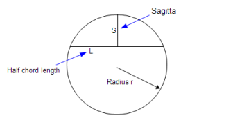
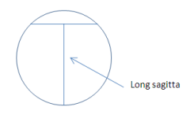
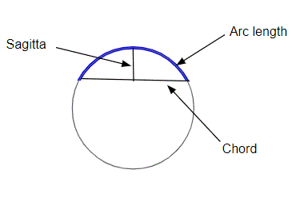

In the figure above, the blue arc is a portion of the circle that is cut off by the horizontal chord. The sagitta is the vertical line from the midpoint of the chord to the arc itself. It is a measure of the 'height' of the arc.
The length of the chord, sagitta and radius of the arc are inter-related, and if you know any two you can calculate the third.

You can find the length of the sagitta using the formula: where:
| s | is the length of the sagitta |
| r | is the radius of the arc |
| l | is one half of distance across the base of the arc (half the chord length) |
Notice that there are two results due to the "plus or minus" in the formula. The smaller one is the sagitta as show in the diagram above. The other is the longer sagitta that goes the other way across the larger part of the circle:

| a | is the length of the arc |
| r | is the radius of the arc |
| l | is one half of distance across the base of the arc (half the chord length) |
| s | is the length of the sagitta |
| r | is the radius of the arc |
| l | is one half of distance across the base of the arc (half the chord length) |
| s | is the length of the sagitta |
| r | is the radius of the arc |
| l | is one half of distance across the base of the arc (half the chord length) |
Note In all the above formulae, the length l is half the width of the arc. The full width will be double this.

| ENTER RADIUS AND EITHER L or A | ||
| Radius R | clear | |
| Chord length L | clear | |
| or | ||
| Arc Length A | clear | |